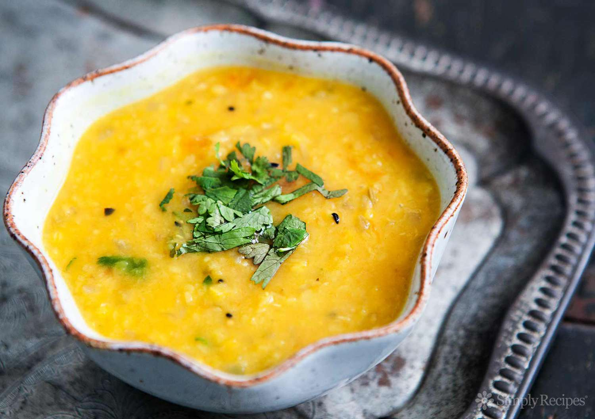

Overview
This is a recipe for my mom's ginger/turmeric dal. I have been eating this dal for my whole life, and am continuing to eat it at least 2-3 times a week. I just can't seem to not like it even after consistently eating it. This is a very simple recipe that been passed down from my grandma, to my mom, to me, and now to you. Hope you enjoy the process of making this, even at tricky parts, remember your final product and push forward!
Ingredients

- ¼ cup moong dal
- ½ cup masoor dal
- ½ teaspoon finely grated ginger
- ¼ teaspoon finely chopped red Thai chilli
- ¼ teaspoon fenugreek seeds
- ¼ teaspoon turmeric
- 1 tablespoon of ghee
- Salt to taste
Instructions
- Boil dal till completely disintegrated and whisk it till smooth, preferably in a pressure cooker or instant pot.
- Add ghee to a pot
- Add ginger, red chillies, and fenugreek seeds. Mix this around for 30 seconds
- Add turmeric and salt and mix for another 30 seconds
- Add cooked and whisked dal and simmer for 10 minutes till dal starts to bubble.
- Adjust salt and water according to the consistency you desire.
- Serve with a dollop of ghee or butter as a soup, or with rice or chappati as a side dish.
Hope you enjoy this dish!